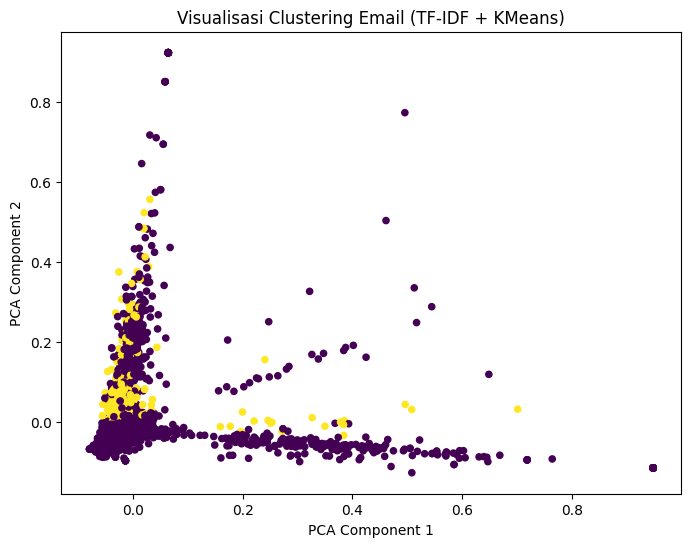

UTS Analisa Clustering#
Analisa Clustering Dokumen pada Data Email#
Import Library#
import pandas as pd
import re
import string
import nltk
from nltk.corpus import stopwords
from nltk.stem import PorterStemmer
from sklearn.feature_extraction.text import TfidfVectorizer
from sklearn.cluster import KMeans
from sklearn.decomposition import PCA
import matplotlib.pyplot as plt
# Unduh stopwords jika belum ada
nltk.download('stopwords')
[nltk_data] Downloading package stopwords to /root/nltk_data...
[nltk_data] Unzipping corpora/stopwords.zip.
True
Input Data#
from google.colab import drive
drive.mount('/content/drive')
file_path = '/content/drive/MyDrive/Semester 7/spam.csv'
Drive already mounted at /content/drive; to attempt to forcibly remount, call drive.mount("/content/drive", force_remount=True).
import pandas as pd
from IPython.display import display
# Baca file CSV dengan encoding latin-1
df = pd.read_csv('/content/drive/MyDrive/Semester 7/spam.csv', encoding='latin-1')
# Hapus semua kolom kosong dan kolom Unnamed
df = df.loc[:, ~df.columns.str.contains('^Unnamed')]
# Tampilkan nama kolom setelah dibersihkan
print(df.columns)
# Tampilkan 5 data teratas dengan tampilan tabel
display(df.head())
# Tampilkan jumlah total data
print("\n===== Jumlah Total Data =====")
print("Jumlah data:", len(df))
Index(['id', 'Text'], dtype='object')
| id | Text | |
|---|---|---|
| 0 | 1 | Go until jurong point, crazy.. Available only ... |
| 1 | 2 | Ok lar... Joking wif u oni... |
| 2 | 3 | Free entry in 2 a wkly comp to win FA Cup fina... |
| 3 | 4 | U dun say so early hor... U c already then say... |
| 4 | 5 | Nah I don't think he goes to usf, he lives aro... |
===== Jumlah Total Data =====
Jumlah data: 5572
Prepocessing#
import re
import string
import nltk
from nltk.corpus import stopwords
from nltk.stem import PorterStemmer
from IPython.display import display
# Unduh stopwords (jika belum)
nltk.download('stopwords')
# Inisialisasi stopwords dan stemmer
stop_words = set(stopwords.words('english'))
stemmer = PorterStemmer()
# --- Fungsi Preprocessing ---
def preprocess(text):
text = str(text).lower() # ubah ke huruf kecil
text = re.sub(r'http\S+|www\S+|https\S+', '', text) # hapus URL
text = re.sub(r'\d+', '', text) # hapus angka
text = text.translate(str.maketrans('', '', string.punctuation)) # hapus tanda baca
tokens = text.split() # pisahkan kata
tokens = [stemmer.stem(word) for word in tokens if word not in stop_words] # hapus stopword & stemming
return " ".join(tokens)
# --- Terapkan Preprocessing ke Seluruh Data ---
df['clean_text'] = df['Text'].apply(preprocess)
# --- Tampilkan 5 Data Teratas Sebelum & Sesudah ---
print("===== Contoh 5 Data Sebelum & Sesudah Preprocessing =====")
display(df[['Text', 'clean_text']].head())
[nltk_data] Downloading package stopwords to /root/nltk_data...
[nltk_data] Package stopwords is already up-to-date!
===== Contoh 5 Data Sebelum & Sesudah Preprocessing =====
| Text | clean_text | |
|---|---|---|
| 0 | Go until jurong point, crazy.. Available only ... | go jurong point crazi avail bugi n great world... |
| 1 | Ok lar... Joking wif u oni... | ok lar joke wif u oni |
| 2 | Free entry in 2 a wkly comp to win FA Cup fina... | free entri wkli comp win fa cup final tkt st m... |
| 3 | U dun say so early hor... U c already then say... | u dun say earli hor u c alreadi say |
| 4 | Nah I don't think he goes to usf, he lives aro... | nah dont think goe usf live around though |
Lowercasing – Mengubah semua huruf menjadi huruf kecil supaya kata yang sama tapi berbeda kapitalisasi dianggap identik.
Hapus URL – Menghilangkan tautan atau alamat web yang biasanya tidak relevan untuk analisis teks.
Hapus angka – Menghapus semua angka karena sering tidak berpengaruh pada makna inti teks.
Hapus tanda baca – Menghilangkan simbol seperti titik, koma, tanda tanya, dll., agar analisis fokus pada kata saja.
Tokenisasi – Memecah kalimat menjadi kata-kata individual agar bisa dianalisis satu per satu.
Hapus stopwords & Stemming – Stopwords dihapus karena kata-kata umum tidak informatif, dan stemming mengubah kata ke bentuk dasar agar kata turunan dianggap sama dengan kata dasarnya.
Ekstraksi Fitur Menggunakan TF-IDF#
from sklearn.feature_extraction.text import TfidfVectorizer
# --- Inisialisasi TF-IDF Vectorizer ---
tfidf = TfidfVectorizer(
max_features=1000, # ambil 1000 kata paling penting
ngram_range=(1, 2), # unigram + bigram
min_df=2, # kata muncul minimal di 2 dokumen
max_df=0.8, # kata muncul di >80% dokumen diabaikan
stop_words='english' # hapus stopwords bahasa Inggris
)
# --- Terapkan TF-IDF ke kolom clean_text ---
tfidf_matrix = tfidf.fit_transform(df['clean_text'])
# --- Ukuran matriks TF-IDF ---
print("===== Ukuran Matriks TF-IDF =====")
print(tfidf_matrix.shape)
# --- Contoh 10 fitur (kata) teratas ---
print("\n===== Contoh 10 Fitur (Kata) TF-IDF =====")
print(tfidf.get_feature_names_out()[:10])
===== Ukuran Matriks TF-IDF =====
(5572, 1000)
===== Contoh 10 Fitur (Kata) TF-IDF =====
['abiola' 'abl' 'abt' 'accept' 'access' 'account' 'account statement'
'activ' 'actual' 'ad']
from sklearn.feature_extraction.text import TfidfVectorizer
import pandas as pd
# --- Inisialisasi TF-IDF Vectorizer ---
vectorizer = TfidfVectorizer(
stop_words='english', # hapus stopwords bahasa Inggris
lowercase=True, # ubah semua ke huruf kecil
max_features=1000 # ambil 1000 kata paling penting
)
# --- Hitung TF-IDF dari kolom 'clean_text' ---
tfidf_matrix = vectorizer.fit_transform(df['clean_text'])
# --- Ubah hasilnya ke DataFrame ---
tfidf_df = pd.DataFrame(
tfidf_matrix.toarray(),
columns=vectorizer.get_feature_names_out()
)
# --- Tampilkan hasil ---
print("🔹 Ukuran matriks TF-IDF:", tfidf_df.shape)
print("\n🔹 5 Data Pertama Hasil TF-IDF:\n")
print(tfidf_df.head())
# --- Lihat 10 kata dengan bobot TF-IDF tertinggi rata-rata ---
mean_tfidf = tfidf_df.mean().sort_values(ascending=False)
print("\n🔹 10 Kata dengan Bobot TF-IDF Tertinggi:\n")
print(mean_tfidf.head(10))
🔹 Ukuran matriks TF-IDF: (5572, 1000)
🔹 5 Data Pertama Hasil TF-IDF:
abiola abl abt accept access account activ actual ad add ... \
0 0.0 0.0 0.0 0.0 0.0 0.0 0.0 0.0 0.0 0.0 ...
1 0.0 0.0 0.0 0.0 0.0 0.0 0.0 0.0 0.0 0.0 ...
2 0.0 0.0 0.0 0.0 0.0 0.0 0.0 0.0 0.0 0.0 ...
3 0.0 0.0 0.0 0.0 0.0 0.0 0.0 0.0 0.0 0.0 ...
4 0.0 0.0 0.0 0.0 0.0 0.0 0.0 0.0 0.0 0.0 ...
yesterday yo yoga youd youll youv yr yup ìï ûò
0 0.0 0.0 0.0 0.0 0.0 0.0 0.0 0.0 0.0 0.0
1 0.0 0.0 0.0 0.0 0.0 0.0 0.0 0.0 0.0 0.0
2 0.0 0.0 0.0 0.0 0.0 0.0 0.0 0.0 0.0 0.0
3 0.0 0.0 0.0 0.0 0.0 0.0 0.0 0.0 0.0 0.0
4 0.0 0.0 0.0 0.0 0.0 0.0 0.0 0.0 0.0 0.0
[5 rows x 1000 columns]
🔹 10 Kata dengan Bobot TF-IDF Tertinggi:
im 0.023752
ok 0.020941
come 0.018365
ur 0.015828
ill 0.015607
dont 0.014569
know 0.014518
ltgt 0.014502
like 0.014183
time 0.013879
dtype: float64
5572 merupakan banyak data dan 1000 merupakan banyaknya kata unik
print("Jumlah fitur TF-IDF:", len(vectorizer.get_feature_names_out()))
print("Contoh fitur:", vectorizer.get_feature_names_out()[:20])
Jumlah fitur TF-IDF: 1000
Contoh fitur: ['abiola' 'abl' 'abt' 'accept' 'access' 'account' 'activ' 'actual' 'ad'
'add' 'address' 'admir' 'aft' 'afternoon' 'age' 'ago' 'ah' 'aha' 'aight'
'aint']
Clustering Dokumen Menggunakan K-Means#
from sklearn.cluster import KMeans
from IPython.display import display
# --- Tentukan jumlah cluster (misal 2: spam & non-spam) ---
num_clusters = 2
# --- Inisialisasi model KMeans ---
kmeans = KMeans(n_clusters=num_clusters, random_state=42, n_init=10)
# --- Latih model KMeans dengan data TF-IDF ---
kmeans.fit(tfidf_matrix)
# --- Simpan hasil cluster ke dataframe ---
df['cluster'] = kmeans.labels_
# --- Tampilkan 10 data pertama beserta cluster ---
print("===== Contoh 10 Data dengan Label Cluster =====")
display(df[['Text', 'clean_text', 'cluster']].head(10))
# --- Lihat jumlah data per cluster ---
print("\n===== Jumlah Data per Cluster =====")
print(df['cluster'].value_counts())
===== Contoh 10 Data dengan Label Cluster =====
| Text | clean_text | cluster | |
|---|---|---|---|
| 0 | Go until jurong point, crazy.. Available only ... | go jurong point crazi avail bugi n great world... | 0 |
| 1 | Ok lar... Joking wif u oni... | ok lar joke wif u oni | 0 |
| 2 | Free entry in 2 a wkly comp to win FA Cup fina... | free entri wkli comp win fa cup final tkt st m... | 0 |
| 3 | U dun say so early hor... U c already then say... | u dun say earli hor u c alreadi say | 0 |
| 4 | Nah I don't think he goes to usf, he lives aro... | nah dont think goe usf live around though | 0 |
| 5 | FreeMsg Hey there darling it's been 3 week's n... | freemsg hey darl week word back id like fun st... | 0 |
| 6 | Even my brother is not like to speak with me. ... | even brother like speak treat like aid patent | 0 |
| 7 | As per your request 'Melle Melle (Oru Minnamin... | per request mell mell oru minnaminungint nurun... | 0 |
| 8 | WINNER!! As a valued network customer you have... | winner valu network custom select receivea å£ ... | 0 |
| 9 | Had your mobile 11 months or more? U R entitle... | mobil month u r entitl updat latest colour mob... | 0 |
===== Jumlah Data per Cluster =====
cluster
0 5171
1 401
Name: count, dtype: int64
Dilakukan clustering dengan dua cluster yaitu 0 dan 1, pada code diatas dapat dilihat banyanya data cluster 0 dan 1
import numpy as np
terms = vectorizer.get_feature_names_out()
order_centroids = kmeans.cluster_centers_.argsort()[:, ::-1]
for i in range(num_clusters):
print(f"\nCluster {i} - Top 10 Kata:")
print(", ".join([terms[ind] for ind in order_centroids[i, :10]]))
Cluster 0 - Top 10 Kata:
ok, come, ur, ill, ltgt, dont, know, like, got, time
Cluster 1 - Top 10 Kata:
im, home, gonna, want, ill, work, sorri, realli, know, ok
Code diatas menampilkan pengelompokan kata yang mirip
Evaluasi Clustering#
from sklearn.metrics import silhouette_score
# Hitung skor silhouette
score = silhouette_score(tfidf_matrix, kmeans.labels_)
print("===== Evaluasi Clustering =====")
print("Silhouette Score:", score)
===== Evaluasi Clustering =====
Silhouette Score: 0.012418589964713801
Silhouette Score mengukur kualitas hasil clustering
Visualisasi#
from sklearn.decomposition import PCA
import matplotlib.pyplot as plt
# Reduksi dimensi ke 2 komponen utama
pca = PCA(n_components=2)
reduced_data = pca.fit_transform(tfidf_matrix.toarray())
# Plot hasil clustering
plt.figure(figsize=(8, 6))
plt.scatter(reduced_data[:, 0], reduced_data[:, 1], c=kmeans.labels_, cmap='viridis', s=20)
plt.title('Visualisasi Clustering Email (TF-IDF + KMeans)')
plt.xlabel('PCA Component 1')
plt.ylabel('PCA Component 2')
plt.show()

Component 1 (PC1) → arah yang menangkap perbedaan kata-kata paling signifikan antar dokumen.
Component 2 (PC2) → arah kedua yang menangkap perbedaan penting berikutnya yang tidak ditangkap PC1.